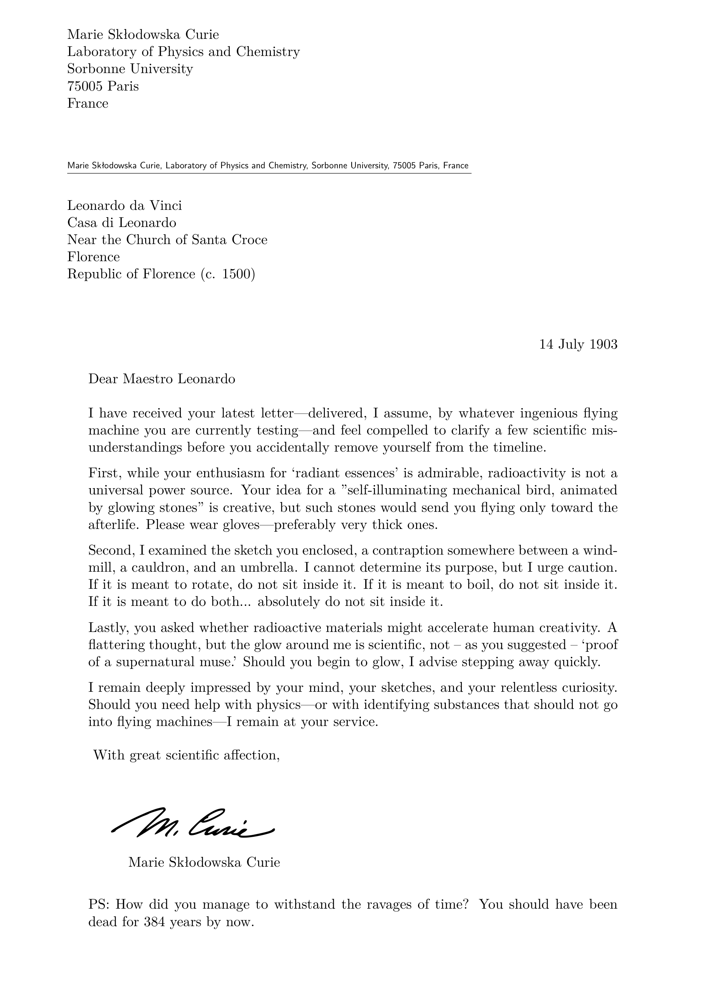
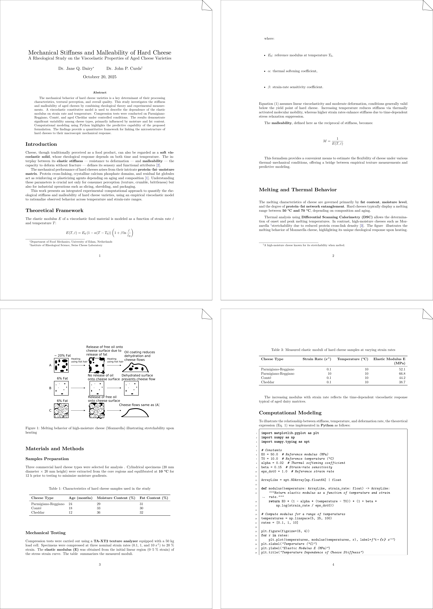

Development Roadmap¶
Roadmap and development notes for TeXSmith. I keep this file as a running checklist of features to implement, refactorings to perform, and documentation to write. It will remain part of TeXSmith until version 1.0.0 ships.
Roadmap¶
- [x] Simplify the attributes SSOT for templates and fragments
- [ ] Deploy to PyPI
- [ ] WARNING - Unresolved mustache
{{callouts.style}}in template attributes; leaving placeholder as-is. - [ ] Attribute redundancy (
numbered,press.numbered, etc.) - [ ] Refactoring snippets and fix snippet templates
- [ ] Font: mono fallback for missing characters
- [ ] Use
\capsfromsoulinstead of\textscfor smallcaps - [ ] Global user's configuration (.texsmith/config.yml)
- [ ] Unified Fences Syntax
- [ ] Multicolumns
- [ ] Font Size
- [ ] Center/Right alignment
- [ ] Language
- [ ] LATEX only / HTML only
- [ ] LATEX raw
- [ ] More Examples
- [ ] University exam
- [ ] Student's Quiz
- [ ] Multiline Acronyms
- [ ] Support for
inserted textand{~~deleted text~~}(goodbox) - [ ] Index: support for multi-indexes
- [ ] Cross-references (cleveref package)
- [ ] Enhanced tables: add with controls (auto, fixed width,
tabulary, etc.) - [ ] Support table orientation (rotate very large tables)
- [ ] CI: uv run mkdocs build #--strict not yet ready
- [ ] Support for
tocloftpackage to customize list of figures/tables - [ ] Support for
enumitempackage to customize lists - [ ] Develop submodules as standalone plugins
- [ ] Marginalia (
marginparpackage with footnotes syntax) - [ ] Epigraph Plugin
- [ ] Letterine
- [ ] Custom variables to insert in a document using moustaches
Refactoring snippets in documentation¶
Pour l'instant nous avons une syntaxe custom dans la doc utilisant un plugin snippet avec des attributs data-* pour transmettre caption, layout, files, etc. Elle repose sur pymdownx.snippets pour inclure le contenu d'un fichier dans un autre.
Cette solution n'est pas optimale : elle n'est pas très flexible et consiste à insérer le contenu d'un fichier dans un autre. Il serait préférable de revoir l'approche pour utiliser une syntaxe plus simple et plus lisible.
L'alternative proposée serait d'utiliser un yaml pour l'insertion d'un snippet:
Le PDF généré est inséré comme image (comme la syntaxe actuelle) avec un lien de téléchargement. Il convient donc aussi de générer une préview PNG et le PDF. De la même manière on conserve la possibilité d'ajouter l'attribut layout déjà existant dans la syntaxe actuelle et qui permet ici d'agencer plusieurs pages dans le préview PNG.
La génération du cadre autour du PNG n'est plus conservée car nous avons récemment ajouté le fragment ts-frame qui permet d'encadrer n'importe quel contenu. On peut imaginer aussi la syntaxe suivante:

Ou même en utilisant une configuration locale

- Analyse le problème consulte l'implémentation actuelle et liste les fichiers concernés.
- Propose un plan de refactoring pour migrer vers la nouvelle syntaxe.
- Implémente les changements nécessaires dans la documentation et le code source.
- Vérifie que les tests passent et met à jour les tests obsolète
- Ne garde aucun shim ou layer de compatibilité : l'ancienne syntaxe doit être complètement retirée.
- Documente la nouvelle syntaxe dans la documentation officielle de TeXSmith.
- Vérifie que la génération de snippet fonctionne correctement avec la nouvelle syntaxe, au besoin rajoute un exemple avec mkdocs dans examples/ et appuye toi sur l'exemple mkdocs
- Tente de compiler la doc du projet avec uv run mkdocs serve et uv mkdocs build pour vérifier que tout fonctionne correctement.
- Lance les tests et le lint avec uv run ruff check . et uv run ruff format .
Unified Fences Syntax¶
which can add captions to figures or tables, but discrimination of target (figure or table) is
not done automatically you must specify figure-caption or table-caption
The subfigures with the | ^1 syntax works, but is not optimal for latex rendering and the reference id generated with attrs: {id: static-id} can be derouting.
TeXSmith offers a more convenient way of adding figures using the admonition style
/// figure { #reference }

Caption...
You can automatically use subfigures with the following. The layout attribute will dictate how the figures are agenced in the output (2:1 two figures horizontally, 2:2 four figures in two columns with two rows.
/// figure { #reference layout="2:1" }


We see in (a) a figure and in (b) another one.
To refer to figures, use the [](reference) which will be replaced by the element number.
We see in Figure [](duck) that the animal has two legs.
Tectonic log¶
We want to mute false warnings and not display them:
/^warning:\s*.*?:\d+:\s*Requested font.*?at.*$/
/^warning:\s*.*?:\d+:\s*Unknown feature.*?in font.*$/
Recent matrix runs with TEX Gyre (bonum/pagella/termes/schola/heros/adventor/cursor) trigger
many Tectonic warnings like Unknown feature ' or repeated Requested font lines; output is
otherwise correct. Keep these noted as benign until we wire the log filter above or document a
flag to silence them.
Features¶
Mermaid color configuration¶
Je remarque que les diagrammes mermaid qui sont créés apparaissent avec un fond gris dans le pdf. Mais nous avions configuré un style mermaid global a texsmith pour avoir des diagrammes b&w dans le pdf final. Il n'est probablement plus activé ou pris en compte. Il faut vérifier cela et corriger le problème.
La gestion du cache des assets est aussi à vérifier et la rendre dépendante de la configuration mermaid (si on change le style, il faut regénérer les diagrammes), ou alors si l'exécutable ou la version de l'image docker utilisée change.
On ajoute ausis cette vérification pour les assets drawio.
MkDocs Linking Issues¶
MkDocs currently fails to resolve links to other pages. For example, [High-Level Workflows](api/high-level.md) becomes \ref{snippet:... but the referenced snippet is never defined. Replacing the syntax with \ref builds successfully but still fails at runtime. Investigate and fix the resolver so links work throughout the site.
Also note that the scientific paper “cheese” example prematurely closes code blocks after a snippet. Identify why the snippet terminates early and correct it.
Acronyms multiline¶
Thw following don't work, it should either warn or join the different lines together.
# Acronyms
The National Aeronautics and Space Administration NASA is responsible for the
civilian space program.
*[NASA]:
Line 1
Line 2
Font style with mono¶
We want to support combinations of font styles with the monospace font. For example:
*`abc`*
***`abc`***
__*`abc`*__
Fences the gros bordel¶
Code¶
We only use ``` fences for code blocks or other special blocks like mermaid, latex, custom tables, etc. No other uses should be allowed.
Admonitions¶
We prefer the MkDocs admonition syntax as it is more flexible and better supported.
!!! note "Note Title"
This is the content of the note.
??? info "Folddable Info Title"
This is the content of the info.
Fenced custom¶
The ::: syntax is reserved for custom containers like center, right, language, etc. No other uses should be allowed.
Font Size¶
tiny, small, large, huge, enormous Other synonyms: tiny, scriptsize, footnotesize, small, normalsize, large, Large, LARGE, huge, Huge Other english synonyms: tiny, very small, small, normal, big, very big, huge, enormous
| Adjective(s) (EN) | LATEX | HTML correspondance (CSS) |
|---|---|---|
| tiny, very tiny | \tiny (≈ 5 pt) | <span style="font-size:0.5em">...</span> |
| very small | \scriptsize (≈ 7 pt) | <span style="font-size:0.7em">...</span> |
| footnote-sized | \footnotesize (≈ 8 pt) | <span style="font-size:0.8em">...</span> |
| small | \small (≈ 9 pt) | <span style="font-size:0.9em">...</span> |
| normal | \normalsize (≈ 10 pt) | <span style="font-size:1em">...</span> |
| big | \large (≈ 12 pt) | <span style="font-size:1.2em">...</span> |
| very big | \Large (≈ 14.4 pt) | <span style="font-size:1.4em">...</span> |
| between big and huge | \LARGE (≈ 17.3 pt) | <span style="font-size:1.7em">...</span> |
| huge | \huge (≈ 20.7 pt) | <span style="font-size:2.1em">...</span> |
| enormous, gigantic | \Huge (≈ 24.9 pt) | <span style="font-size:2.5em">...</span> |
::: font large
This text is large.
:::
Center/Right alignment¶
::: center
texte
:::
::: right
texte
:::
Alignment¶
::: align center
This text is centered.
:::
::: align right
This text is right-aligned.
:::
::: language arabic
We use the syntax verb + option after the opening ::: to specify the type of container and any relevant options.
::: latex only
This LaTeX-only content will be included in the LaTeX output but ignored in HTML.
:::
::: html only
This HTML-only content will be included in the HTML output but ignored in LaTeX.
:::
We can use raw LATEX blocks for more complex LATEX content that doesn't fit well in Markdown:
::: latex raw
\clearpage
:::
With SuperFences we support extra HTML attributes for custom containers:
::: language arabic {#custom-id .custom-class data-attr="value"}
This is Arabic content with custom HTML attributes.
:::
Each ::: container is converted into a <div> with the specified attributes in HTML, while LATEX processes the content according to the container type.
GFM Support for admonitions¶
We want TeXSmith to support GitHub Flavored Markdown (GFM) admonitions as well. This includes the ability to create notes, warnings, tips, and other types of admonitions using the GFM syntax.
> [!NOTE]
> This is a note admonition.
This is converted to the exact same output as the MkDocs admonition syntax. It is equivalent to:
!!! note
This is a note admonition.
Figure References¶
Printed references depend on the document language. In English we would write, “The elephant shown in Figure 1 is large.” The LATEX equivalent is The elephant shown in Figure~\ref{fig:elephant} is large. Pymdown lets us write:
The elephant shown in figure [#fig:elephant] is large.
\hyperref[fig:elephant]{Figure~\ref*{fig:elephant}}
\usepackage[nameinlink]{cleveref}
The elephant shown in \Cref{fig:elephant} is large.
The same sentence in French typography would translate to “The elephant shown in \cref{fig:elephant} is large,” keeping “figure” lowercase.
In scientific English we capitalize “Figure”, while French typography keeps “figure” lowercase.